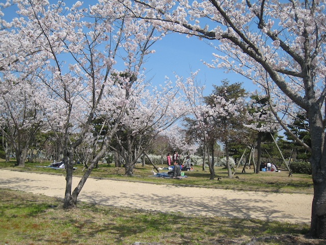

<!DOCTYPE html>
<html lang="en">
	<head>
		<title>Naruto | ブログ（英語） | Canada Club English School  </title>
		<!-- Published with the 'Sunny' theme, designed and developed by Will Woodgate - @willwoodgate -->
		
<!doctype html>
<html>
  <head>
    <script src="https://kit.fontawesome.com/f556c023a3.js" crossorigin="anonymous"></script>
  </head>

  <body>
    <!-- Ready to use Font Awesome. Activate interlock. Dynotherms - connected. Infracells - up. Icons are go! -->
  </body>
</html>

<script>
  !function(g,s,q,r,d){r=g[r]=g[r]||function(){(r.q=r.q||[]).push(
  arguments)};d=s.createElement(q);q=s.getElementsByTagName(q)[0];
  d.src='//d1l6p2sc9645hc.cloudfront.net/tracker.js';q.parentNode.
  insertBefore(d,q)}(window,document,'script','_gs');

  _gs('GSN-625828-H');
  _gs('set', 'anonymizeIP', true);
</script>
<meta http-equiv="Content-Type" content="text/html; charset=utf-8" />
		<meta name="robots" content="index, follow" />
		<meta name="generator" content="RapidWeaver" />
		
	<meta name="twitter:card" content="summary">
	<meta name="twitter:site" content="@canadaclubjp">
	<meta name="twitter:creator" content="@canadaclubjp">
	<meta name="twitter:title" content="Naruto | ブログ（英語） | Canada Club English School  ">
	<meta name="twitter:image" content="https://canadaclubjp.com/resources/CCES-homepage-sitelogo2.jpg">
	<meta name="twitter:url" content="https:/canadaclubjp.com/blog/files/category-naruto.html">
	<meta property="og:type" content="website">
	<meta property="og:site_name" content="Canada Club English School  ">
	<meta property="og:title" content="Naruto | ブログ（英語） | Canada Club English School  ">
	<meta property="og:image" content="https://canadaclubjp.com/resources/CCES-homepage-sitelogo2.jpg">
	<meta property="og:url" content="https:/canadaclubjp.com/blog/files/category-naruto.html">
		
		<meta name="viewport" content="width=device-width, initial-scale=1.0, user-scalable=yes">
		<link rel="stylesheet" type="text/css" media="all" href="../../rw_common/themes/sunny/consolidated.css?rwcache=701511614" />
		
		
		
		
		
		<style type="text/css" media="all"></script>

<div id='networkedblogs_nwidget_container' style='height:360px;padding-top:10px;'><div id='networkedblogs_nwidget_above'></div><div id='networkedblogs_nwidget_widget' style="border:1px solid #D1D7DF;background-color:#F5F6F9;margin:0px auto;"><div id="networkedblogs_nwidget_logo" style="padding:1px;margin:0px;background-color:#edeff4;text-align:center;height:21px;"><a href="http://www.networkedblogs.com/" target="_blank" title="NetworkedBlogs"></a></div><div id="networkedblogs_nwidget_body" style="text-align: center;"></div><div id="networkedblogs_nwidget_follow" style="padding:5px;"><a style="display:block;line-height:100%;width:90px;margin:0px auto;padding:4px 8px;text-align:center;background-color:#3b5998;border:1px solid #D9DFEA;border-bottom-color:#0e1f5b;border-right-color:#0e1f5b;color:#FFFFFF;font-family:'lucida grande',tahoma,verdana,arial,sans-serif;font-size:11px;text-decoration:none;" href="http://www.networkedblogs.com/blog/my-life-in-naruto?ahash=754065eb73ee06582252d1dcefb8807d">Follow this blog</a></div></div><div id='networkedblogs_nwidget_below'></div></div><script type="text/javascript">
if(typeof(networkedblogs)=="undefined"){networkedblogs = {};networkedblogs.blogId=1010175;networkedblogs.shortName="my-life-in-naruto";}
</script><script src="http://nwidget.networkedblogs.com/getnetworkwidget?bid=1010175" type="text/javascript"></script></style>
		
		
		<link rel="alternate" type="application/rss+xml" title="My Life in Naruto" href="https://canadaclubjp.com/blog/files/feed.xml" />
<script type="text/javascript" async src="https://canadaclubjp.com/blog/files/meta.js"></script>

	</head>
	<body class="hasBootstrap hasFreeStyle themeFlood">
		<div id="extraContainer1"></div>
		<div class="clearer"></div>
		<header id="header">
			<div id="headerContent">
				<div id="siteTitle" class="widthWrapper">
					<div id="extraContainer2"></div>
					<div id="logo"><a href="https://canadaclubjp.com/"></a></div>
					<div id="extraContainer3"></div>
					<h1><a href="https://canadaclubjp.com/">Canada Club English School  </a></h1>
					<h2></h2>
					<nav id="nav1" ><ul><li><a href="../../" rel="">ホーム</a></li><li><a href="../../page/" rel="">レッスンについて</a></li><li><a href="../../page-3/" rel="">講師について</a></li><li><a href="../../page-4/" rel="">よくある質問</a></li><li><a href="../../page-5/" rel="">お問い合わせ</a></li><li><a href="../" rel="" class="current">ブログ（英語）</a></li><li><a href="../../page-6/" rel="">レッスンの動画</a></li><li><a href="../../page-7/" rel="">Zoomの設定方法</a></li></ul></nav>
				</div>
			</div>
			<div id="scrollDownButton">
				<a href="#contentContainer" class="smoothscroll">
					<i class="far fa-arrow-alt-circle-down"></i>
				</a>
			</div>
		</header>
		<div id="contentContainerWrap">
			<div id="contentContainer" class="widthWrapper">
				<div id="extraContainer4"></div>
				<nav id="nav2" ><ul></ul></nav>
				<div id="content" role="main">
						
	<div class="blog-archive-headings-wrapper">
		<div class="blog-archive-month">Naruto</div>
		<div class="blog-archive-link"><a href="../index.html">ブログ（英語）</a></div>
	</div>
	
	<div class="blog-archive-entries-wrapper">
		<div id="unique-entry-id-375" class="blog-entry"><h1 class="blog-entry-title"><a href="3fb1cae8de00823a5ac701af770ded4f-375.html" class="blog-permalink">O-Live-U (I love you)</a></h1><div class="blog-entry-date">23/10/22 17:20 </div><div class="blog-entry-body"><span style="font-size:15px; ">It's fall, and one of the things that means for me is picking and pickling olives.</span><span class="blog-read-more"><a href="3fb1cae8de00823a5ac701af770ded4f-375.html"> Read More…</a></span><div class="blog-entry-comments"><a class="blog-comment-link" href="3fb1cae8de00823a5ac701af770ded4f-375.html#disqus_thread">Comments</a></div></div></div><div id="unique-entry-id-61" class="blog-entry"><h1 class="blog-entry-title"><a href="5069221025d9b9dbb2c7eb4a38da2ffe-61.html" class="blog-permalink">うめ/Japanese Apricot Jam</a></h1><div class="blog-entry-date">10/06/17 20:26 </div><div class="blog-entry-body"><span style="font-size:15px; ">We recently bought some Japanese apricots (</span><span style="font:15px HiraginoSans-W3; ">梅</span><span style="font-size:15px; ">) . About half of them are being used to make syrup, which we'll drink with soda, and the other half I cooked up as jam, last night.</span><span class="blog-read-more"><a href="5069221025d9b9dbb2c7eb4a38da2ffe-61.html"> Read More…</a></span><div class="blog-entry-comments"><a class="blog-comment-link" href="5069221025d9b9dbb2c7eb4a38da2ffe-61.html#disqus_thread">Comments</a></div></div></div><div id="unique-entry-id-62" class="blog-entry"><h1 class="blog-entry-title"><a href="225b3dd61eed47e55a49be9662901877-62.html" class="blog-permalink">How do you cook your 竹の子/bamboo shoots?</a></h1><div class="blog-entry-date">04/06/17 20:19 </div><div class="blog-entry-body"><span style="font-size:15px; ">We received fresh bamboo shoots today, so I'm cooking them up!</span><span class="blog-read-more"><a href="225b3dd61eed47e55a49be9662901877-62.html"> Read More…</a></span><div class="blog-entry-comments"><a class="blog-comment-link" href="225b3dd61eed47e55a49be9662901877-62.html#disqus_thread">Comments</a></div></div></div><div id="unique-entry-id-63" class="blog-entry"><h1 class="blog-entry-title"><a href="fc7ff865fd015e19a7ef88529209cf4a-63.html" class="blog-permalink">2017 Tacos Party</a></h1><div class="blog-entry-date">27/05/17 19:58 </div><div class="blog-entry-body"><span style="font-size:15px; ">It's that time of the year when tacos may be found in Naruto.</span><span class="blog-read-more"><a href="fc7ff865fd015e19a7ef88529209cf4a-63.html"> Read More…</a></span><div class="blog-entry-comments"><a class="blog-comment-link" href="fc7ff865fd015e19a7ef88529209cf4a-63.html#disqus_thread">Comments</a></div></div></div><div id="unique-entry-id-65" class="blog-entry"><h1 class="blog-entry-title"><a href="6b212a7e6ab0c1ce8f8b173c5bac138d-65.html" class="blog-permalink">Self-serve Food Kiosks</a></h1><div class="blog-entry-date">30/04/17 20:21 </div><div class="blog-entry-body"><span style="font-size:15px; ">Every once in a while, you may stumble across one of these kiosks in Japan, where you may buy various food stuffs.</span><span class="blog-read-more"><a href="6b212a7e6ab0c1ce8f8b173c5bac138d-65.html"> Read More…</a></span><div class="blog-entry-comments"><a class="blog-comment-link" href="6b212a7e6ab0c1ce8f8b173c5bac138d-65.html#disqus_thread">Comments</a></div></div></div><div id="unique-entry-id-68" class="blog-entry"><h1 class="blog-entry-title"><a href="30d243ef9b4c463340629a07be8cac95-68.html" class="blog-permalink">A Bird in the Hand...</a></h1><div class="blog-entry-date">08/04/17 20:23 </div><div class="blog-entry-body"><span style="font-size:15px; ">Recently we've been lucky enough to have some songbirds around our house. I've decided to be a good neighbour to them.</span><span class="blog-read-more"><a href="30d243ef9b4c463340629a07be8cac95-68.html"> Read More…</a></span><div class="blog-entry-comments"><a class="blog-comment-link" href="30d243ef9b4c463340629a07be8cac95-68.html#disqus_thread">Comments</a></div></div></div><div id="unique-entry-id-73" class="blog-entry"><h1 class="blog-entry-title"><a href="25c056984743a346733505fe2322487f-73.html" class="blog-permalink">A Sampling from bakery nook in Naruto</a></h1><div class="blog-entry-date">28/01/17 20:53 </div><div class="blog-entry-body"><span style="font-size:14px; ">We sampled some of the goods from a local bakery today.</span><span class="blog-read-more"><a href="25c056984743a346733505fe2322487f-73.html"> Read More…</a></span><div class="blog-entry-comments"><a class="blog-comment-link" href="25c056984743a346733505fe2322487f-73.html#disqus_thread">Comments</a></div></div></div><div id="unique-entry-id-82" class="blog-entry"><h1 class="blog-entry-title"><a href="f18806168020b3bc04826d0d59ca5894-82.html" class="blog-permalink">I've got a pocket full of...</a></h1><div class="blog-entry-date">18/09/16 19:07 </div><div class="blog-entry-body"><span style="font-size:14px; ">I did a little foraging yesterday.</span><span class="blog-read-more"><a href="f18806168020b3bc04826d0d59ca5894-82.html"> Read More…</a></span><div class="blog-entry-comments"><a class="blog-comment-link" href="f18806168020b3bc04826d0d59ca5894-82.html#disqus_thread">Comments</a></div></div></div><div id="unique-entry-id-84" class="blog-entry"><h1 class="blog-entry-title"><a href="4a49dd667cce90f85302ea8ac0d4f1c4-84.html" class="blog-permalink">Neighbourhood Cats, Beware!</a></h1><div class="blog-entry-date">04/09/16 19:40 </div><div class="blog-entry-body"><span style="font-size:14px; ">I decided I needed a little help patrolling my property for homeless cats.</span><span class="blog-read-more"><a href="4a49dd667cce90f85302ea8ac0d4f1c4-84.html"> Read More…</a></span><div class="blog-entry-comments"><a class="blog-comment-link" href="4a49dd667cce90f85302ea8ac0d4f1c4-84.html#disqus_thread">Comments</a></div></div></div><div id="unique-entry-id-85" class="blog-entry"><h1 class="blog-entry-title"><a href="44f49434f414b6afacca595669d02759-85.html" class="blog-permalink">In Search of Smoke</a></h1><div class="blog-entry-date">30/08/16 18:04 </div><div class="blog-entry-body"><span style="font-size:14px; ">I visited a local company yesterday to buy some liquid smoke.</span><span class="blog-read-more"><a href="44f49434f414b6afacca595669d02759-85.html"> Read More…</a></span><div class="blog-entry-comments"><a class="blog-comment-link" href="44f49434f414b6afacca595669d02759-85.html#disqus_thread">Comments</a></div></div></div><div id="unique-entry-id-87" class="blog-entry"><h1 class="blog-entry-title"><a href="2075f27178226a5e8bcd65891b748bc1-87.html" class="blog-permalink">Fireworks/Hanabi/花火</a></h1><div class="blog-entry-date">07/08/16 21:32 </div><div class="blog-entry-body"><span style="font-size:15px; ">Today was the annual fireworks festival in Naruto.</span><span class="blog-read-more"><a href="2075f27178226a5e8bcd65891b748bc1-87.html"> Read More…</a></span><div class="blog-entry-comments"><a class="blog-comment-link" href="2075f27178226a5e8bcd65891b748bc1-87.html#disqus_thread">Comments</a></div></div></div><div id="unique-entry-id-88" class="blog-entry"><h1 class="blog-entry-title"><a href="a4404be8eec92bb6d404a295180eeaac-88.html" class="blog-permalink">RELAQ - Good Place for a Workout</a></h1><div class="blog-entry-date">23/07/16 20:03 </div><div class="blog-entry-body"><span style="font-size:15px; ">I went for a workout today at RELAQ.</span><span class="blog-read-more"><a href="a4404be8eec92bb6d404a295180eeaac-88.html"> Read More…</a></span><div class="blog-entry-comments"><a class="blog-comment-link" href="a4404be8eec92bb6d404a295180eeaac-88.html#disqus_thread">Comments</a></div></div></div><div id="unique-entry-id-109" class="blog-entry"><h1 class="blog-entry-title"><a href="89d76180d1bd2ac0290c48f23d2fa82d-109.html" class="blog-permalink">When it rains...or in this case, snows...</a></h1><div class="blog-entry-date">24/01/16 14:15 </div><div class="blog-entry-body"><span style="font-size:15px; ">The weather forecast turned out to be true! It did snow overnight, and it continues to snow today.</span><span class="blog-read-more"><a href="89d76180d1bd2ac0290c48f23d2fa82d-109.html"> Read More…</a></span><div class="blog-entry-comments"><a class="blog-comment-link" href="89d76180d1bd2ac0290c48f23d2fa82d-109.html#disqus_thread">Comments</a></div></div></div><div id="unique-entry-id-115" class="blog-entry"><h1 class="blog-entry-title"><a href="f9c14ad5dc9557b383c03a0826802319-115.html" class="blog-permalink">Naruto Moussaka</a></h1><div class="blog-entry-date">28/11/15 21:00 </div><div class="blog-entry-body"><span style="font-size:15px; ">Today I made Moussaka, but with a twist.</span><span class="blog-read-more"><a href="f9c14ad5dc9557b383c03a0826802319-115.html"> Read More…</a></span><div class="blog-entry-comments"><a class="blog-comment-link" href="f9c14ad5dc9557b383c03a0826802319-115.html#disqus_thread">Comments</a></div></div></div><div id="unique-entry-id-120" class="blog-entry"><h1 class="blog-entry-title"><a href="816cfdeaac0f9dcb942c36ad1ddb2559-120.html" class="blog-permalink">1 Potato, 2 Potato, Sweet Potato Pie</a></h1><div class="blog-entry-date">17/10/15 13:44 </div><div class="blog-entry-body"><span style="font-size:14px; ">Naruto, the city where we live in Japan is famous for a few things, one of which is a brand of sweet potatoes. We recently received some sweet potatoes from friends and have been enjoying them many different ways. One of my favourite ways to enjoy sweet potatoes is in sweet potato pie.</span><span class="blog-read-more"><a href="816cfdeaac0f9dcb942c36ad1ddb2559-120.html"> Read More…</a></span><div class="blog-entry-comments"><a class="blog-comment-link" href="816cfdeaac0f9dcb942c36ad1ddb2559-120.html#disqus_thread">Comments</a></div></div></div><div id="unique-entry-id-133" class="blog-entry"><h1 class="blog-entry-title"><a href="d2aef7bdd6d9c233c1a5e2ce41a0a01d-133.html" class="blog-permalink">Dancing Fools / 阿波躍り</a></h1><div class="blog-entry-date">09/08/15 20:50 </div><div class="blog-entry-body"><p>Awa Odori. This is a festival like no other. Simple. Difficult. Passive. Active. Old. Young. Awa odori encapsulates them all. It&rsquo;s happening now.</p><span class="blog-read-more"><a href="d2aef7bdd6d9c233c1a5e2ce41a0a01d-133.html"> Read More…</a></span><div class="blog-entry-comments"><a class="blog-comment-link" href="d2aef7bdd6d9c233c1a5e2ce41a0a01d-133.html#disqus_thread">Comments</a></div></div></div><div id="unique-entry-id-199" class="blog-entry"><h1 class="blog-entry-title"><a href="03461640c8043af8b97a500c8bfc26d4-199.html" class="blog-permalink">100 Yen Festival & Chair Race</a></h1><div class="blog-entry-date">10/05/14 19:55 </div><div class="blog-entry-body"><span style="font-size:15px; ">Sunny and warm, today was a good day for a festival.</span><span class="blog-read-more"><a href="03461640c8043af8b97a500c8bfc26d4-199.html"> Read More…</a></span><div class="blog-entry-comments"><a class="blog-comment-link" href="03461640c8043af8b97a500c8bfc26d4-199.html#disqus_thread">Comments</a></div></div></div><div id="unique-entry-id-201" class="blog-entry"><h1 class="blog-entry-title"><a href="e865c7667c335e65f8c9591259e5e869-201.html" class="blog-permalink">Cherry Blossoms</a></h1><div class="blog-entry-date">31/03/14 21:09 </div><div class="blog-entry-body"><span style="font-size:15px; ">Our family went for a picnic today and enjoyed the cherry blossoms.</span><span class="blog-read-more"><a href="e865c7667c335e65f8c9591259e5e869-201.html"> Read More…</a></span><div class="blog-entry-comments"><a class="blog-comment-link" href="e865c7667c335e65f8c9591259e5e869-201.html#disqus_thread">Comments</a></div></div></div><div id="unique-entry-id-212" class="blog-entry"><h1 class="blog-entry-title"><a href="07bdb7f2855056c8f3ad637eaea6428a-212.html" class="blog-permalink">The Case of the Missing Fruit</a></h1><div class="blog-entry-date">08/12/13 20:49 </div><div class="blog-entry-body"><span style="font-size:15px; ">I had an adventure today when I tried to buy some dried fruit.</span><span class="blog-read-more"><a href="07bdb7f2855056c8f3ad637eaea6428a-212.html"> Read More…</a></span><div class="blog-entry-comments"><a class="blog-comment-link" href="07bdb7f2855056c8f3ad637eaea6428a-212.html#disqus_thread">Comments</a></div></div></div><div id="unique-entry-id-216" class="blog-entry"><h1 class="blog-entry-title"><a href="817b78d147fbe3c4cd2a86b7aa30ccb3-216.html" class="blog-permalink">Adventures in Olive Picking</a></h1><div class="blog-entry-date">30/10/13 12:45 </div><div class="blog-entry-body"><span style="font-size:15px; ">I did a bit of olive picking today.</span><span class="blog-read-more"><a href="817b78d147fbe3c4cd2a86b7aa30ccb3-216.html"> Read More…</a></span><div class="blog-entry-comments"><a class="blog-comment-link" href="817b78d147fbe3c4cd2a86b7aa30ccb3-216.html#disqus_thread">Comments</a></div></div></div><div id="unique-entry-id-218" class="blog-entry"><h1 class="blog-entry-title"><a href="f262cb0ca63719bace1a85d3b4000d61-218.html" class="blog-permalink">Olives from our garden.</a></h1><div class="blog-entry-date">26/10/13 19:14 </div><div class="blog-entry-body"><span style="font-size:15px; ">Today I picked the olives off of our trees.</span><span class="blog-read-more"><a href="f262cb0ca63719bace1a85d3b4000d61-218.html"> Read More…</a></span><div class="blog-entry-comments"><a class="blog-comment-link" href="f262cb0ca63719bace1a85d3b4000d61-218.html#disqus_thread">Comments</a></div></div></div><div id="unique-entry-id-232" class="blog-entry"><h1 class="blog-entry-title"><a href="f9a52498898b1e15af6bad3a169e3604-232.html" class="blog-permalink">Taking the ferry to work.</a></h1><div class="blog-entry-date">22/05/13 15:17 </div><div class="blog-entry-body"><span style="font-size:15px; ">I cycled to work yesterday, taking the ferry for part of the journey.</span><span class="blog-read-more"><a href="f9a52498898b1e15af6bad3a169e3604-232.html"> Read More…</a></span><div class="blog-entry-comments"><a class="blog-comment-link" href="f9a52498898b1e15af6bad3a169e3604-232.html#disqus_thread">Comments</a></div></div></div><div id="unique-entry-id-240" class="blog-entry"><h1 class="blog-entry-title"><a href="20e787be9543a56b95dbe8145347a39a-240.html" class="blog-permalink">Have you tasted Konatsu?</a></h1><div class="blog-entry-date">26/04/13 21:10 </div><div class="blog-entry-body"><span style="font-size:15px; ">We recently received a box of Konatsu, one of my favourite citrus fruits.</span><span class="blog-read-more"><a href="20e787be9543a56b95dbe8145347a39a-240.html"> Read More…</a></span><div class="blog-entry-comments"><a class="blog-comment-link" href="20e787be9543a56b95dbe8145347a39a-240.html#disqus_thread">Comments</a></div></div></div><div id="unique-entry-id-250" class="blog-entry"><h1 class="blog-entry-title"><a href="8ab38747ef7f7c48ecf3e5bb1b8de38f-250.html" class="blog-permalink">Chocolates and Flowers</a></h1><div class="blog-entry-date">27/02/13 19:46 </div><div class="blog-entry-body"><span style="font-size:13px; ">My daughter made a new flower arrangement.</span><span class="blog-read-more"><a href="8ab38747ef7f7c48ecf3e5bb1b8de38f-250.html"> Read More…</a></span><div class="blog-entry-comments"><a class="blog-comment-link" href="8ab38747ef7f7c48ecf3e5bb1b8de38f-250.html#disqus_thread">Comments</a></div></div></div><div id="unique-entry-id-251" class="blog-entry"><h1 class="blog-entry-title"><a href="bd1777d3ea0bd86ba11f426de6fe73c3-251.html" class="blog-permalink">At the beach in Hawaii - NOT!</a></h1><div class="blog-entry-date">22/02/13 20:15 </div><div class="blog-entry-body"><span style="font-size:13px; ">Work, work, work! It must be done.</span><span class="blog-read-more"><a href="bd1777d3ea0bd86ba11f426de6fe73c3-251.html"> Read More…</a></span><div class="blog-entry-comments"><a class="blog-comment-link" href="bd1777d3ea0bd86ba11f426de6fe73c3-251.html#disqus_thread">Comments</a></div></div></div><div id="unique-entry-id-252" class="blog-entry"><h1 class="blog-entry-title"><a href="28f38d3c9da66384da87c1bd73080e05-252.html" class="blog-permalink">Muffin's 1st Visit to a Dog Park</a></h1><div class="blog-entry-date">17/02/13 16:53 </div><div class="blog-entry-body"><span style="font-size:13px; ">Today we took Muffin to a Dog Park.</span><span class="blog-read-more"><a href="28f38d3c9da66384da87c1bd73080e05-252.html"> Read More…</a></span><div class="blog-entry-comments"><a class="blog-comment-link" href="28f38d3c9da66384da87c1bd73080e05-252.html#disqus_thread">Comments</a></div></div></div><div id="unique-entry-id-255" class="blog-entry"><h1 class="blog-entry-title"><a href="c9aae3b9bf29c6bc9819e2f796b3e7a4-255.html" class="blog-permalink">An Honest Day's Work</a></h1><div class="blog-entry-date">28/01/13 11:28 </div><div class="blog-entry-body"><span style="font-size:13px; ">Today I picked up a huge haul of wood.  This wood will provide many hours of heating for our house, once it&rsquo;s all chopped and dried.</span><span class="blog-read-more"><a href="c9aae3b9bf29c6bc9819e2f796b3e7a4-255.html"> Read More…</a></span><div class="blog-entry-comments"><a class="blog-comment-link" href="c9aae3b9bf29c6bc9819e2f796b3e7a4-255.html#disqus_thread">Comments</a></div></div></div><div id="unique-entry-id-263" class="blog-entry"><h1 class="blog-entry-title"><a href="2c22ebc6d1f93be576a2db58bdc11260-263.html" class="blog-permalink">A Happy Food and Drink Day</a></h1><div class="blog-entry-date">10/11/12 21:51 </div><div class="blog-entry-body">Today we enjoyed sights, sounds, and savoury delights.<span class="blog-read-more"><a href="2c22ebc6d1f93be576a2db58bdc11260-263.html"> Read More…</a></span><div class="blog-entry-comments"><a class="blog-comment-link" href="2c22ebc6d1f93be576a2db58bdc11260-263.html#disqus_thread">Comments</a></div></div></div><div id="unique-entry-id-297" class="blog-entry"><h1 class="blog-entry-title"><a href="0dbc1cf9dccfee9ccddffd78b500a33c-297.html" class="blog-permalink">Cherry Blossoms</a></h1><div class="blog-entry-date">08/04/12 21:51 </div><div class="blog-entry-body"><p style="text-align:center;"><br /><br /><br /><br /><p>Today, Easter Sunday, was a beautiful day to see the cherry blossoms.  It was the last day before our children start school again, so it was nice to be able to go out and have a picnic and enjoy the scenery.</p><br /><p>We went to the Sports Park in Naruto because there are many beautiful cherry trees that are low to the ground and lots of open areas to sit under the trees and enjoy the sights.  We got together with a few friends and had a good time relaxing, chatting and eating.</p><br /><p>The trees were almost at full bloom today and this might be our last chance to enjoy their beauty.  By next weekend, many of the blossoms may be gone.  We&rsquo;re thankful we could get together with others and have a nice picnic party.</p><br /><br /></p><span class="blog-read-more"><a href="0dbc1cf9dccfee9ccddffd78b500a33c-297.html"> Read More…</a></span><div class="blog-entry-comments"><a class="blog-comment-link" href="0dbc1cf9dccfee9ccddffd78b500a33c-297.html#disqus_thread">Comments</a></div></div></div><div id="unique-entry-id-315" class="blog-entry"><h1 class="blog-entry-title"><a href="a39c7fd92ad610bec8ac7ad105986afb-315.html" class="blog-permalink">Snowfall</a></h1><div class="blog-entry-date">25/01/12 17:42 </div><div class="blog-entry-body">The weather prediction for today was correct: snow!<span class="blog-read-more"><a href="a39c7fd92ad610bec8ac7ad105986afb-315.html"> Read More…</a></span><div class="blog-entry-comments"><a class="blog-comment-link" href="a39c7fd92ad610bec8ac7ad105986afb-315.html#disqus_thread">Comments</a></div></div></div><div id="unique-entry-id-320" class="blog-entry"><h1 class="blog-entry-title"><a href="412db9eaaada27f15bdbcc74d6badfa3-320.html" class="blog-permalink">Warm!</a></h1><div class="blog-entry-date">07/01/12 20:27 </div><div class="blog-entry-body">Come, sit by the fire.  I&rsquo;ve a story to tell.<span class="blog-read-more"><a href="412db9eaaada27f15bdbcc74d6badfa3-320.html"> Read More…</a></span><div class="blog-entry-comments"><a class="blog-comment-link" href="412db9eaaada27f15bdbcc74d6badfa3-320.html#disqus_thread">Comments</a></div></div></div><div id="unique-entry-id-321" class="blog-entry"><h1 class="blog-entry-title"><a href="92e2686b6e26faccdb3e1cb8b40c07ef-321.html" class="blog-permalink">Happy New Year!</a></h1><div class="blog-entry-date">01/01/12 21:21 </div><div class="blog-entry-body">Happy New Year to all.  Here&rsquo;s how we started the day.<span class="blog-read-more"><a href="92e2686b6e26faccdb3e1cb8b40c07ef-321.html"> Read More…</a></span><div class="blog-entry-comments"><a class="blog-comment-link" href="92e2686b6e26faccdb3e1cb8b40c07ef-321.html#disqus_thread">Comments</a></div></div></div><div id="unique-entry-id-338" class="blog-entry"><h1 class="blog-entry-title"><a href="fd255f75150a188ea1e233d8ea5c1ed2-338.html" class="blog-permalink">Kama matsuri and Sake matsuri</a></h1><div class="blog-entry-date">12/11/11 19:53 </div><div class="blog-entry-body">A great way to start the day - buying some pottery, then drinking some sake.<span class="blog-read-more"><a href="fd255f75150a188ea1e233d8ea5c1ed2-338.html"> Read More…</a></span><div class="blog-entry-comments"><a class="blog-comment-link" href="fd255f75150a188ea1e233d8ea5c1ed2-338.html#disqus_thread">Comments</a></div></div></div><div id="unique-entry-id-340" class="blog-entry"><h1 class="blog-entry-title"><a href="80160bd650f8be2f3e7bad594e9e6aea-340.html" class="blog-permalink">Look what I found!</a></h1><div class="blog-entry-date">08/11/11 21:25 </div><div class="blog-entry-body">We went to the bazaar at the Naruto public library on Sunday.  Lots of interesting things to see.<span class="blog-read-more"><a href="80160bd650f8be2f3e7bad594e9e6aea-340.html"> Read More…</a></span><div class="blog-entry-comments"><a class="blog-comment-link" href="80160bd650f8be2f3e7bad594e9e6aea-340.html#disqus_thread">Comments</a></div></div></div><div id="unique-entry-id-346" class="blog-entry"><h1 class="blog-entry-title"><a href="2052ceef9c70a65d5d0b3c1a25583280-346.html" class="blog-permalink">Naruto City Public Market</a></h1><div class="blog-entry-date">30/10/11 21:57 </div><div class="blog-entry-body">Sunday market anyone?<span class="blog-read-more"><a href="2052ceef9c70a65d5d0b3c1a25583280-346.html"> Read More…</a></span><div class="blog-entry-comments"><a class="blog-comment-link" href="2052ceef9c70a65d5d0b3c1a25583280-346.html#disqus_thread">Comments</a></div></div></div><div id="unique-entry-id-348" class="blog-entry"><h1 class="blog-entry-title"><a href="d3514908f84369a83520857b81d68453-348.html" class="blog-permalink">Uzumatsuri - Naruto's Whirlpool Festival</a></h1><div class="blog-entry-date">23/10/11 17:20 </div><div class="blog-entry-body">Today we went to Uzumatsuri in Naruto.<span class="blog-read-more"><a href="d3514908f84369a83520857b81d68453-348.html"> Read More…</a></span><div class="blog-entry-comments"><a class="blog-comment-link" href="d3514908f84369a83520857b81d68453-348.html#disqus_thread">Comments</a></div></div></div>
	</div>
	

<script type="text/javascript">
//<![CDATA[
var disqus_shortname = 'canadaclubenglishschool';
(function() {
	var s = document.createElement('script'); s.async = true;
	s.type = 'text/javascript';
	s.src = 'https://' + disqus_shortname + '.disqus.com/count.js';
	(document.getElementsByTagName('HEAD')[0] || document.getElementsByTagName('BODY')[0]).appendChild(s);
	}());
//]]>
</script>

				</div>
				<div class="clearer"></div>
				<div id="extraContainer5"></div>
				<aside id="aside">
					<div id="extraContainer6"></div>
					<div id="sidebarTitle"><h3></h3></div>
					<div id="sidebar"></div>
					<div id="pluginSidebar"><div id="blog-categories"><a href="category-canada.html" class="blog-category-link-enabled">Canada</a><br /><a href="category-food.html" class="blog-category-link-enabled">Food</a><br /><a href="category-hobbies.html" class="blog-category-link-enabled">Hobbies</a><br /><a href="category-holidays.html" class="blog-category-link-enabled">Holidays</a><br /><a href="category-humor.html" class="blog-category-link-enabled">Humor</a><br /><a href="category-japan.html" class="blog-category-link-enabled">Japan</a><br /><a href="category-naruto.html" class="blog-category-link-enabled">Naruto</a><br /><a href="category-nature.html" class="blog-category-link-enabled">Nature</a><br /><a href="category-our-house.html" class="blog-category-link-enabled">Our House</a><br /><a href="category-our-school.html" class="blog-category-link-enabled">Our School</a><br /><a href="category-outdoors.html" class="blog-category-link-enabled">Outdoors</a><br /><a href="category-personal.html" class="blog-category-link-enabled">Personal</a><br /><a href="category-weather.html" class="blog-category-link-enabled">Weather</a><br /><a href="category-wood-stove.html" class="blog-category-link-enabled">Wood Stove</a><br /><a href="category-work.html" class="blog-category-link-enabled">Work</a><br /></div><div id="blog-archives"><a class="blog-archive-link-enabled" href="archive-march-2023.html">March 2023</a><br /><div class="blog-archive-link-disabled">February 2023</div><div class="blog-archive-link-disabled">January 2023</div><a class="blog-archive-link-enabled" href="archive-december-2022.html">December 2022</a><br /><div class="blog-archive-link-disabled">November 2022</div><a class="blog-archive-link-enabled" href="archive-october-2022.html">October 2022</a><br /><div class="blog-archive-link-disabled">September 2022</div><div class="blog-archive-link-disabled">August 2022</div><div class="blog-archive-link-disabled">July 2022</div><div class="blog-archive-link-disabled">June 2022</div><div class="blog-archive-link-disabled">May 2022</div><div class="blog-archive-link-disabled">April 2022</div><div class="blog-archive-link-disabled">March 2022</div><div class="blog-archive-link-disabled">February 2022</div><a class="blog-archive-link-enabled" href="archive-january-2022.html">January 2022</a><br /><div class="blog-archive-link-disabled">December 2021</div><div class="blog-archive-link-disabled">November 2021</div><a class="blog-archive-link-enabled" href="archive-october-2021.html">October 2021</a><br /><div class="blog-archive-link-disabled">September 2021</div><div class="blog-archive-link-disabled">August 2021</div><a class="blog-archive-link-enabled" href="archive-july-2021.html">July 2021</a><br /><a class="blog-archive-link-enabled" href="archive-june-2021.html">June 2021</a><br /><div class="blog-archive-link-disabled">May 2021</div><a class="blog-archive-link-enabled" href="archive-april-2021.html">April 2021</a><br /><a class="blog-archive-link-enabled" href="archive-march-2021.html">March 2021</a><br /><div class="blog-archive-link-disabled">February 2021</div><div class="blog-archive-link-disabled">January 2021</div><a class="blog-archive-link-enabled" href="archive-december-2020.html">December 2020</a><br /><a class="blog-archive-link-enabled" href="archive-november-2020.html">November 2020</a><br /><a class="blog-archive-link-enabled" href="archive-october-2020.html">October 2020</a><br /><a class="blog-archive-link-enabled" href="archive-september-2020.html">September 2020</a><br /><div class="blog-archive-link-disabled">August 2020</div><a class="blog-archive-link-enabled" href="archive-july-2020.html">July 2020</a><br /><div class="blog-archive-link-disabled">June 2020</div><a class="blog-archive-link-enabled" href="archive-may-2020.html">May 2020</a><br /><a class="blog-archive-link-enabled" href="archive-april-2020.html">April 2020</a><br /><a class="blog-archive-link-enabled" href="archive-march-2020.html">March 2020</a><br /><div class="blog-archive-link-disabled">February 2020</div><a class="blog-archive-link-enabled" href="archive-january-2020.html">January 2020</a><br /><a class="blog-archive-link-enabled" href="archive-december-2019.html">December 2019</a><br /><div class="blog-archive-link-disabled">November 2019</div><a class="blog-archive-link-enabled" href="archive-october-2019.html">October 2019</a><br /><a class="blog-archive-link-enabled" href="archive-september-2019.html">September 2019</a><br /><a class="blog-archive-link-enabled" href="archive-august-2019.html">August 2019</a><br /><a class="blog-archive-link-enabled" href="archive-july-2019.html">July 2019</a><br /><a class="blog-archive-link-enabled" href="archive-june-2019.html">June 2019</a><br /><a class="blog-archive-link-enabled" href="archive-may-2019.html">May 2019</a><br /><a class="blog-archive-link-enabled" href="archive-april-2019.html">April 2019</a><br /><a class="blog-archive-link-enabled" href="archive-march-2019.html">March 2019</a><br /><a class="blog-archive-link-enabled" href="archive-february-2019.html">February 2019</a><br /><a class="blog-archive-link-enabled" href="archive-january-2019.html">January 2019</a><br /><a class="blog-archive-link-enabled" href="archive-december-2018.html">December 2018</a><br /><a class="blog-archive-link-enabled" href="archive-november-2018.html">November 2018</a><br /><a class="blog-archive-link-enabled" href="archive-october-2018.html">October 2018</a><br /><a class="blog-archive-link-enabled" href="archive-september-2018.html">September 2018</a><br /><a class="blog-archive-link-enabled" href="archive-august-2018.html">August 2018</a><br /><a class="blog-archive-link-enabled" href="archive-july-2018.html">July 2018</a><br /><a class="blog-archive-link-enabled" href="archive-june-2018.html">June 2018</a><br /><a class="blog-archive-link-enabled" href="archive-may-2018.html">May 2018</a><br /><a class="blog-archive-link-enabled" href="archive-april-2018.html">April 2018</a><br /><a class="blog-archive-link-enabled" href="archive-march-2018.html">March 2018</a><br /><a class="blog-archive-link-enabled" href="archive-february-2018.html">February 2018</a><br /><a class="blog-archive-link-enabled" href="archive-january-2018.html">January 2018</a><br /><a class="blog-archive-link-enabled" href="archive-december-2017.html">December 2017</a><br /><div class="blog-archive-link-disabled">November 2017</div><a class="blog-archive-link-enabled" href="archive-october-2017.html">October 2017</a><br /><a class="blog-archive-link-enabled" href="archive-september-2017.html">September 2017</a><br /><a class="blog-archive-link-enabled" href="archive-august-2017.html">August 2017</a><br /><a class="blog-archive-link-enabled" href="archive-july-2017.html">July 2017</a><br /><a class="blog-archive-link-enabled" href="archive-june-2017.html">June 2017</a><br /><a class="blog-archive-link-enabled" href="archive-may-2017.html">May 2017</a><br /><a class="blog-archive-link-enabled" href="archive-april-2017.html">April 2017</a><br /><div class="blog-archive-link-disabled">March 2017</div><a class="blog-archive-link-enabled" href="archive-february-2017.html">February 2017</a><br /><a class="blog-archive-link-enabled" href="archive-january-2017.html">January 2017</a><br /><a class="blog-archive-link-enabled" href="archive-december-2016.html">December 2016</a><br /><a class="blog-archive-link-enabled" href="archive-november-2016.html">November 2016</a><br /><a class="blog-archive-link-enabled" href="archive-october-2016.html">October 2016</a><br /><a class="blog-archive-link-enabled" href="archive-september-2016.html">September 2016</a><br /><a class="blog-archive-link-enabled" href="archive-august-2016.html">August 2016</a><br /><a class="blog-archive-link-enabled" href="archive-july-2016.html">July 2016</a><br /><a class="blog-archive-link-enabled" href="archive-june-2016.html">June 2016</a><br /><a class="blog-archive-link-enabled" href="archive-may-2016.html">May 2016</a><br /><a class="blog-archive-link-enabled" href="archive-april-2016.html">April 2016</a><br /><a class="blog-archive-link-enabled" href="archive-march-2016.html">March 2016</a><br /><a class="blog-archive-link-enabled" href="archive-february-2016.html">February 2016</a><br /><a class="blog-archive-link-enabled" href="archive-january-2016.html">January 2016</a><br /><a class="blog-archive-link-enabled" href="archive-december-2015.html">December 2015</a><br /><a class="blog-archive-link-enabled" href="archive-november-2015.html">November 2015</a><br /><a class="blog-archive-link-enabled" href="archive-october-2015.html">October 2015</a><br /><a class="blog-archive-link-enabled" href="archive-september-2015.html">September 2015</a><br /><a class="blog-archive-link-enabled" href="archive-august-2015.html">August 2015</a><br /><a class="blog-archive-link-enabled" href="archive-july-2015.html">July 2015</a><br /><a class="blog-archive-link-enabled" href="archive-june-2015.html">June 2015</a><br /><a class="blog-archive-link-enabled" href="archive-may-2015.html">May 2015</a><br /><a class="blog-archive-link-enabled" href="archive-april-2015.html">April 2015</a><br /><a class="blog-archive-link-enabled" href="archive-march-2015.html">March 2015</a><br /><a class="blog-archive-link-enabled" href="archive-february-2015.html">February 2015</a><br /><a class="blog-archive-link-enabled" href="archive-january-2015.html">January 2015</a><br /><a class="blog-archive-link-enabled" href="archive-december-2014.html">December 2014</a><br /><a class="blog-archive-link-enabled" href="archive-november-2014.html">November 2014</a><br /><a class="blog-archive-link-enabled" href="archive-october-2014.html">October 2014</a><br /><a class="blog-archive-link-enabled" href="archive-september-2014.html">September 2014</a><br /><a class="blog-archive-link-enabled" href="archive-august-2014.html">August 2014</a><br /><a class="blog-archive-link-enabled" href="archive-july-2014.html">July 2014</a><br /><a class="blog-archive-link-enabled" href="archive-june-2014.html">June 2014</a><br /><a class="blog-archive-link-enabled" href="archive-may-2014.html">May 2014</a><br /><a class="blog-archive-link-enabled" href="archive-april-2014.html">April 2014</a><br /><a class="blog-archive-link-enabled" href="archive-march-2014.html">March 2014</a><br /><a class="blog-archive-link-enabled" href="archive-february-2014.html">February 2014</a><br /><a class="blog-archive-link-enabled" href="archive-january-2014.html">January 2014</a><br /><a class="blog-archive-link-enabled" href="archive-december-2013.html">December 2013</a><br /><a class="blog-archive-link-enabled" href="archive-november-2013.html">November 2013</a><br /><a class="blog-archive-link-enabled" href="archive-october-2013.html">October 2013</a><br /><a class="blog-archive-link-enabled" href="archive-september-2013.html">September 2013</a><br /><a class="blog-archive-link-enabled" href="archive-august-2013.html">August 2013</a><br /><a class="blog-archive-link-enabled" href="archive-july-2013.html">July 2013</a><br /><a class="blog-archive-link-enabled" href="archive-june-2013.html">June 2013</a><br /><a class="blog-archive-link-enabled" href="archive-may-2013.html">May 2013</a><br /><a class="blog-archive-link-enabled" href="archive-april-2013.html">April 2013</a><br /><a class="blog-archive-link-enabled" href="archive-march-2013.html">March 2013</a><br /><a class="blog-archive-link-enabled" href="archive-february-2013.html">February 2013</a><br /><a class="blog-archive-link-enabled" href="archive-january-2013.html">January 2013</a><br /><a class="blog-archive-link-enabled" href="archive-december-2012.html">December 2012</a><br /><a class="blog-archive-link-enabled" href="archive-november-2012.html">November 2012</a><br /><a class="blog-archive-link-enabled" href="archive-october-2012.html">October 2012</a><br /><a class="blog-archive-link-enabled" href="archive-september-2012.html">September 2012</a><br /><a class="blog-archive-link-enabled" href="archive-august-2012.html">August 2012</a><br /><a class="blog-archive-link-enabled" href="archive-july-2012.html">July 2012</a><br /><a class="blog-archive-link-enabled" href="archive-june-2012.html">June 2012</a><br /><a class="blog-archive-link-enabled" href="archive-may-2012.html">May 2012</a><br /><a class="blog-archive-link-enabled" href="archive-april-2012.html">April 2012</a><br /><a class="blog-archive-link-enabled" href="archive-march-2012.html">March 2012</a><br /><a class="blog-archive-link-enabled" href="archive-february-2012.html">February 2012</a><br /><a class="blog-archive-link-enabled" href="archive-january-2012.html">January 2012</a><br /><a class="blog-archive-link-enabled" href="archive-december-2011.html">December 2011</a><br /><a class="blog-archive-link-enabled" href="archive-november-2011.html">November 2011</a><br /><a class="blog-archive-link-enabled" href="archive-october-2011.html">October 2011</a><br /><a class="blog-archive-link-enabled" href="archive-september-2011.html">September 2011</a><br /></div><div id="blog-rss-feeds"><a class="blog-rss-link" href="feed.xml" rel="alternate" type="application/rss+xml" title="My Life in Naruto">RSS Feed</a><br /></div></div>
					<div id="extraContainer7"></div>
				</aside>
			</div>
			<div id="extraContainer8"></div>
			<footer id="footer">
				<div class="widthWrapper">
					<div id="extraContainer9"></div>
					<div id="lastUpdated"><span id="updatedLabel"></span> 2023/03/26</div>
					<div id="breadcrumb"><span id="breadcrumbLabel"></span> </div>
					<div id="footerContent">&copy; 2020 arlen <a href="#" id="rw_email_contact">お問合せ</a><script type="text/javascript">var _rwObsfuscatedHref0 = "mai";var _rwObsfuscatedHref1 = "lto";var _rwObsfuscatedHref2 = ":ca";var _rwObsfuscatedHref3 = "nad";var _rwObsfuscatedHref4 = "acl";var _rwObsfuscatedHref5 = "ubj";var _rwObsfuscatedHref6 = "p@b";var _rwObsfuscatedHref7 = "loo";var _rwObsfuscatedHref8 = "m.o";var _rwObsfuscatedHref9 = "cn.";var _rwObsfuscatedHref10 = "ne.";var _rwObsfuscatedHref11 = "jp";var _rwObsfuscatedHref = _rwObsfuscatedHref0+_rwObsfuscatedHref1+_rwObsfuscatedHref2+_rwObsfuscatedHref3+_rwObsfuscatedHref4+_rwObsfuscatedHref5+_rwObsfuscatedHref6+_rwObsfuscatedHref7+_rwObsfuscatedHref8+_rwObsfuscatedHref9+_rwObsfuscatedHref10+_rwObsfuscatedHref11; document.getElementById("rw_email_contact").href = _rwObsfuscatedHref;</script></div>
					<div id="extraContainer10"></div>
				</div>
			</footer>
		</div>
		<script src="../../rw_common/themes/sunny/scripts/jquery-3.3.1.min.js?rwcache=701511614"></script>
		<script src="../../rw_common/themes/sunny/scripts/scripts.js?rwcache=701511614"></script>
		<script src="../../rw_common/themes/sunny/custom.js?rwcache=701511614"></script>
		
	</body>
</html>